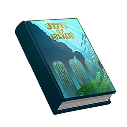

Fontaine · Books & Literature
The History of the Decline and Fall of Remuria
Scholar Pulteney’s three-volume Fontaine history recounts Remuria’s rise and drowning while openly acknowledging the legends, lost sources, and later distortions behind his account.

Pulteney’s Later History
The History of the Decline and Fall of Remuria is a three-volume Fontaine work attributed in its own preface to the scholar Pulteney, written in the early years of Fontaine’s founding. The author says the account draws on legends and superstitions that arose after Remuria’s rapid destruction, and that the disaster left many original sources beneath the water.
Pulteney is therefore both a narrator of Remuria’s history and a later scholar interpreting incomplete evidence. His conclusions should be compared with Remurian memories and the Canticles of Harmony quest, not treated as the final word.
Volume I: The Arrival of Remus
The first volume begins with a broad legend of early peoples, heavenly guidance, and a flood that destroys older settlements. It then turns to Remus, who arrives at Meropis in a golden ship called Fortuna, teaches farming, and builds cities and temples. The book presents this as the restoration of civilization in the land later called Fontaine.
Its opening joins a cosmological myth to a local account of Remuria. It does not establish that every earlier society in Teyvat ended in the same flood or that Remuria was built on the seabed.
Volume II: The City and the Great Symphony
The second volume describes Remuria’s capital, seaways, tower, and the four human Harmosts Remus raised as partners in governing its cities. It portrays the Great Symphony as a means of carrying a common order across the realm, while warning that the effort to extend divine power to humans brought corruption, violence, and revolt.
The text is a retrospective moral history. It does not name Phobos as a calculating machine or explain the Symphony’s workings in the technical terms later quest events reveal.
Volume III: The Fall and the Queen of Waters
The final volume describes the city and its residents being swallowed by the sea. It then turns to the Queen of All Waters, who settles conflicts among the survivors and establishes new communities and a law-guided order. Pulteney closes by arguing that the popular image of Remurian scholars as soul-stealing magisters is distorted, even though he acknowledges that the empire made golems and suffered moral decline.
The book’s account of Egeria and the post-Remurian settlement is the author’s historical framing; later Fontaine sources provide additional context about Egeria and the founding of the nation.
What Canticles of Harmony Adds
The later Canticles of Harmony quest supplies evidence the century-later book lacks. It reveals that Remus’s final plan involved Scylla’s attack on the capital as a staged invasion and his sacrifice to release his subjects from their artificial stone bodies. Scylla says he failed to reach Domus Aurea in time, and the waves swallowed the city.
The quest also identifies Phobos with the prophet Sybilla and shows how its gathered wishes included destructive impulses. This complicates Pulteney’s account of the fall as moral degeneration and fate catching up with Remuria. The book remains valuable as evidence of how later Fontaine scholars understood the empire, while the quest gives a closer account of its final events.
This is an original CoreGG reading guide, not an official HoYoverse article or a reproduction of the game text. Source links below identify the records used so you can check the original context.
Sources & references
Check these sources for the original game text and reference trail.